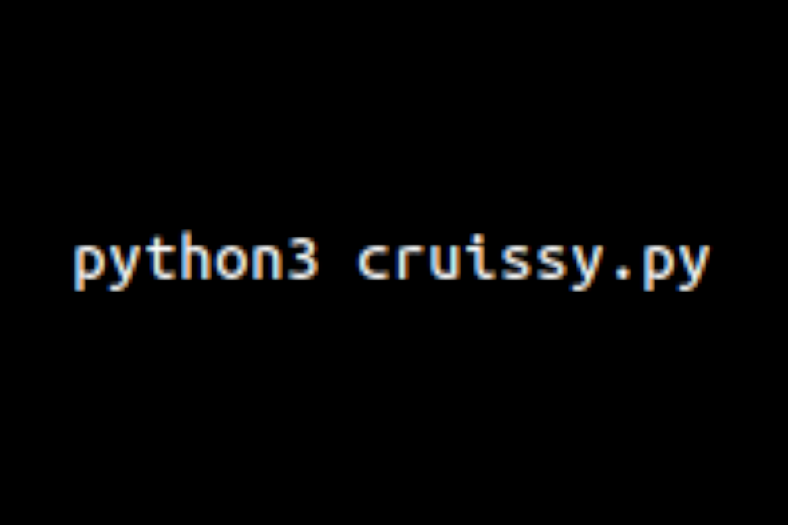
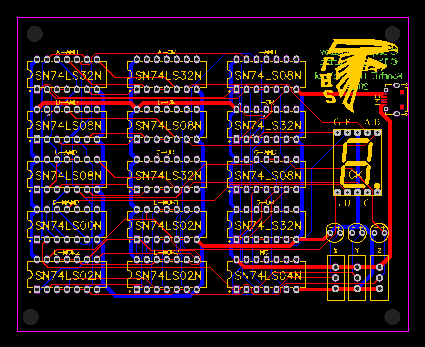
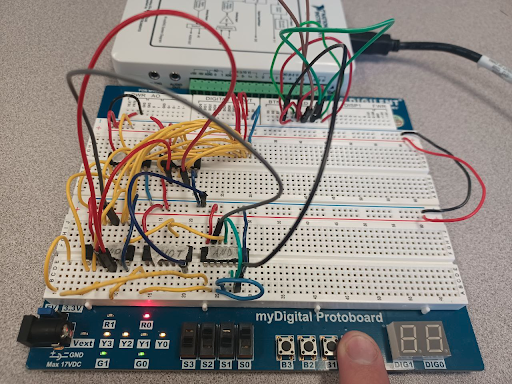

Projects
Below are the projects I have done over the years.
Project #16
Cruissy
Questionably named Python program designed to attempt making Tom Cruise win the People's Choice Awards. Some parts of it were a success (like bypassing reCAPTCHAs via solving an audio part instead of the image one), and others not so much (like eventually getting IP banned due to not being careful). Overall, it was a pretty fun and challenging project.
November 2022
Project #15
$25,000 Duolingo Sword Quest
A very messy Python script designed to complete Duolingo lessons for you. Utilized the Selenium library to access the website and its elements. Initially made just to try and win in a competition for a fancy sword, now it can be used to just let your Duolingo account run on autopilot. Most likely the biggest code project I've ever done.
October 2022
Project #14
Qubit by Qubit Quantum Computing Course Completion

This was an 8-month long course designed for high school students to learn the basics of quantum computing concepts and applications.
April 2022
Project #13
Birthday Circuit Project
A slightly more complicated project extending the knowledge of simple circuitry. This time around the task was to use AOI/NAND/NOR logic and 3 switches (8 inputs) to display the digits of someone's (in this case my) birthday in a mm-dd-yy format. Going beyond the basics, I have also designed and put together a PCB version of the same circuit (although it may or may not have worked).
April 2022
Project #12
Car Alarm Project
This project was about using newly gained knowledge of electronics to design and build a "car alarm" - a simple (or not so much) circuit with 4 switch inputs and only 1 correct combination.
November 2021
Project #11
Model Rocket Launching Project
End of the year project where we had to construct a model rocket and launch it with small rocket engines of varying strength. Unfortunately, I lost my rocket at the rooftop of one of the school's buildings, so I have no trophy from that day, but the whole experience is still vivid in my mind :)
May 2021
Project #10
Sizing Up the Universe Video Project

This project was about understanding the massive scale of space and showing it in some meaningful way. I decided to go with juggling balls as planets and my school's football field as vast space. Got some practice with video editing and storytelling along the way as well.
February 2021
Project #9
Glider Design Project

For this solo project, I had to design and create a simple glider, and then modify it along the way to achieve the longest distance possible. I went with an interseting route of creating modifications with extra balsa wood instead of something like paper, and that route was also quite extensive - I went for 8 trials of 10 throws each instead of the initial 3 trials. The glider worked pretty well in the end, so my high effort was technically worth it.
November 2020
Project #8
Airfoil Design Project

Me and my partner were tasked to design an airfoil with some extensive initial constraints and other useful information. We had to use an airfoil simulator and a lot of equations to come up with our unique airfoil that fulfilled all of the requirements. Was it the most efficient airfoil? No. But it's still pretty good, and that is what matters.
October 2020
Project #7
Hubble Video Project

This project was about researching a certain aerospace industry achievement and creating a video about it - me and my partner decided to go with the Hubble Telescope. Personally grew a little bit in the video editing skill.
August 2020
Project #6
VEX Car Wash Project

This project was about designing one of the given systems from VEX Robotics parts running on RobotC programming language - our team got to build a "car wash". This was the first serious hardware/software mix for me personally, and I'm really glad we were successful in finishing this build.
February 2020
Project #5
Happy Meal Toy Project

Our team got to create a toy for a new McDonald's toy collection, given that it had to be something from a Disney franchise. We went with Stewie from Family Guy, and the result was... interesting. This project tested our 3D modeling skills to the limits, but we were successful in the end.
May 2019
Project #4
Artificial Heart Valve Project

Our engineering design class got a chance to work with another class - Principles of Biomedical Science (PBS). We, engineers, were tasked with creating a functional prototype of a heart valve that would later be tested by the PBS students on a real heart. Unfortunately, due to severe lack of communication, we never found out whether our valve was actually functioning within a heart. Nevertheless, we got to model a complicated object and test our abilties in creating simple, yet efficient designs.
March 2019
Project #3
Reverse Engineering Project

This project was about 3D modeling a given toy by making a series of precise measurements of the parts which would later be used for those parts' digital representations. Our team got the hardest toy from the batch, and while it was quite challenging to go through, this project left me with a highly improved skill of 3D modeling.
January 2019
Project #2
Wooden Toy Project

One of the first engineering projects I have worked on in high school. This weird looking thing was initially supposed to be a man doing push-ups, but he "evolved backwards" into a box with wings. This project tested the skills of designing, 3D modeling, and laser cutting.
January 2019
Project #1
Parallel Parking LEGO Car

The oldest recorded project that I have ever participated in - a parallel parking LEGO car. My dad was in charge of the code, and I was responsible for the implementation of the parking system into the car.
Circa September 2013